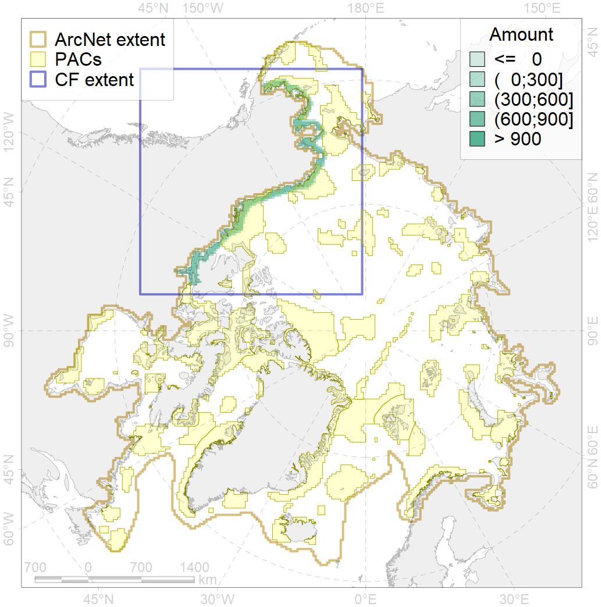

4016

| CF code | 4016 |
| CF name | Feeding area of the Broad whitefish (Coregonus nasus), Euro-Asian populations |
| Time Period | 1950-2000s |
| Source(s) | Chereshnev, 2008 ; Reshetnikov, 2010 |
| Seasonality | June-October |
| Depth Horizon | 0-60 |
| Methodology | Compiled from literature sources based on field observations |
| Use Restrictions | Open access |
| Author Name | N. Chernova |
| Notes | |
| Scenario’s Target | 0.324 |
| Target Achievement | 0.456 (Scenario: 140.8%) |
| PAC | Share of the Total Amount within the PAC | Share of the Target Achievement for the ArcNet | PAC’s Contribution to the Target Achievement |
|---|---|---|---|
| 3 | 12.6%15.9% | 36.3%44.1% | 25.8%31.3% |
| 5 | 2.0%2.2% | 3.1%3.4% | 2.2%2.4% |
| 6 | 0.2%0.4% | 0.5%1.2% | 0.4%0.9% |
| 60 | 8.6%9.6% | 20.8%22.1% | 14.8%15.7% |
| 61 | 0.3% | 0.9% | 0.6% |
| 62 | 19.3%20.5% | 55.8%57.4% | 39.6%40.7% |
| 65 | 0.0%0.0% | 0.1%0.1% | 0.0%0.1% |
| inner | 43.0%48.9% | 117.5%129.1% | 83.5%91.7% |
| outer | 57.0%72.5% | 23.3%62.5% | 16.5%44.4% |
| † supplement values are for area consistence whereas principal values are for Accenter compatible gridded stats |